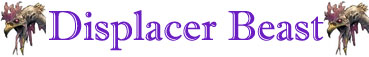

Stretta per Divorare

|
|
Climate/Terrain | Montagne o Colline |
| Frequency | Rare | |
| Organization | Solitaria o Coppia | |
| Activity Cycle | Any | |
| Diet | Carnivore | |
| Intelligence | Low intelligence (5) (9 Punti Combattimento) | |
| Treasure | None | |
| Alignment | Lawful Evil | |
| No. Appearing | 1d10: (1-6) 1 (7-10) 2 | |
| Armor Class | 5 | |
| Movement | 15 | |
| Hit Dice | 6+3 | |
| Thac0 | 14 | |
| No. of Attacks | tentacolo/tentacolo/morso | |
| Damage / Attacks | 1d6+2 (taglio)/1d6+2 (taglio)/1d8+4 (taglio) | |
| Special Attacks | Istinto Predatorio; Stretta per Divorare |
|
| Special Defenses | Distorsione Superiore; | |
| Special Weakness | Nessuna | |
| Magic Resistance | None | |
| Senses | Vista Comune, Sensi Superiori, Oscurovisione | |
| Size | Large (2.70 m. lungo) | |
| Morale | Elite (14) | |
| XP value | 870 |
Descrizione
Questa creatura sembra una pantera emaciata, con una pelliccia d i colore nero-blu, sei zampe e un corpo che è solo pelle e ossa. Sul su o dorso crescono due tentacoli che terminano con spinose sporgenze cornee visibilmente pericolose. I suoi occhi sono verde smeraldo e rifulgono di un sinistro splendore. La taglia di una pantera distorcente è larga essendo la stessa lunga circa 2,7 metri e pesante approssimativamente 250 kg.
Combat
Le belve
distorcenti flagellano gli avversari con i loro tentacoli e mordono con ferocia
i nemici che si avvicinano.
ISTINTO PREDATORIO
(Lesser Special
Ability):
La creatura possiede un forte
istinto predatorio, per tale motivo costei riceve un
bonus costante di +1 alla Thac0
con i suoi attacchi.
STRETTA PER DIVORARE (Lesser Special Ability): Questa creatura è in grado di utilizzare i propri tentacoli per stringere l'avversario e morderlo con ferocia. Qualora, infatti, questa creatura colpisce con entrambi i tentacoli lo stesso avversario, lo terrà stretto e potrà morderlo con incredibile accuratezza. In particolare, l'attacco simultaneo di morso eventualmente effettuato contro il medesimo avversario riceverà un bonus di +4 al tiro per colpire e di +2 al dado base delle ferite.
DISTORSIONE SUPERIORE (Powerful Special Ability): Questa creatura è in grado di distorcere la luce intorno a se stessa in modo tale da apparire leggermente distante rispetto alla sua posizione reale. Per tale motivo, la creatura, apparendo costantemente in una posizione leggermente diversa da quella realmente occupata, risulterà più difficile da colpire. Ogni attacco, sia in corpo a corpo che a distanza, rivolto direttamente contro la stessa, infatti, avrà 33% di fallire andando a vuoto. Parimenti il lancio di incantesimi che prevedano come effetto quello di scagliare elementi od oggetti direttamente contro la creatura avranno il 33% di possibilità di fallire; in questo caso il tiro percentuale va effettuato prima di ogni eventuale tiro per colpire e ripetuto per ogni singolo oggetto scagliato (si pensi alla magia Magic Missile la quale richiederà un tiro percentuale per ogni dardo lanciato sulla creatura). Non si applicherà, invece, questo beneficio nei confronti di tutti gli incantesimi che, nonostante abbiano la creatura come proprio bersaglio diretto, non prevedano di colpirla con oggetti od elementi (si pensi alle magie mentali, a molte magie della scuola necromancy ed illusion nonché alle magie clericali quali, ad esempio, Bestow Curse e Toxic Cloud). Questo beneficio non si applicherà, inoltre, a tutti gli effetti ed alle magie ad area in cui la creatura si trovi coinvolta. Si noti che, nonostante non si tratti di un'illusione, dipendendo l'incantesimo dalla rifrazione della luce, le creature accecate e quelle che non utilizzano una normale vista per individuare la creatura (come ad esempio le creature dotate di infravisione, vista abissale, senso totale e senso del tremore) non subiscono alcun effetto da questo incantesimo. Per il medesimo motivo, in zone di buio totale, questo potere speciale non avrà alcun effetto. Si noti che una magia di True Seeing rileverà la posizione reale della creatura annullando totalmente l'effetto di questa abilità.
Habitat/Society
Le belve distorcenti preferiscono piccole prede, ma mangiano tutto ciò che riescono a catturare. Considerano come prede tutte le altre creature, ad eccezione di quelle di taglia Huge o Gargantuan che incutono loro un certo timore, e attaccano qualsiasi creatura incontrata. Nutrono un odio profondo verso tutti i canidi e li attaccano con ferocia non appena li incontrano.
Ecology
Queste creatura sono predatori temuti. L'abbondanza delle risorse mistiche presenti nel loro corpo induce spesso potenti maghi a cacciarle per smembrare il loro corpo ed estrarre le preziose risorse.
Mystical Resource Sourge
(Occhi) Quantità: 1, Presenza 33%
- Scuola di Magia :
Divination
- Qualità
della Risorsa: Common.
Mystical Resource Sourge
(Tentacoli) Quantità: 2, Presenza 50% - Scuola di Magia:
Alteration
- Qualità della Risorsa: Uncommon.